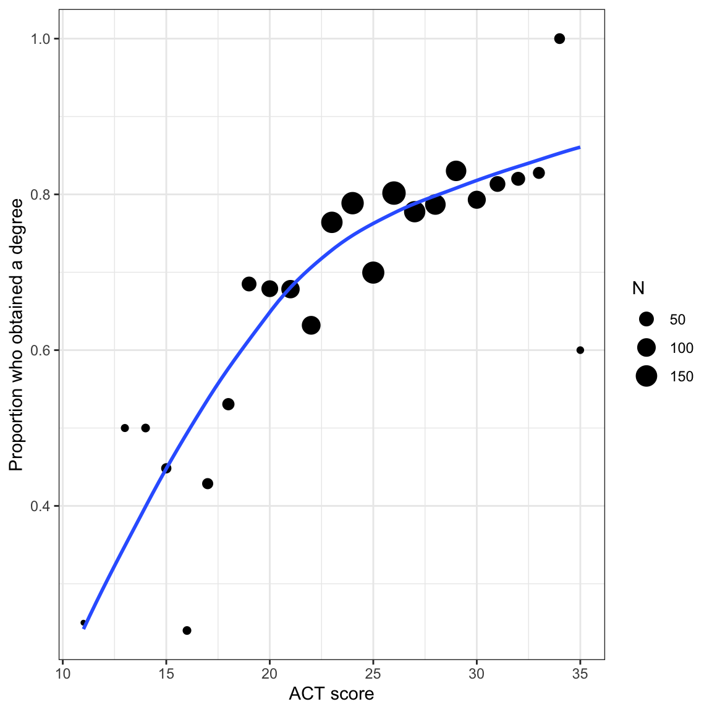
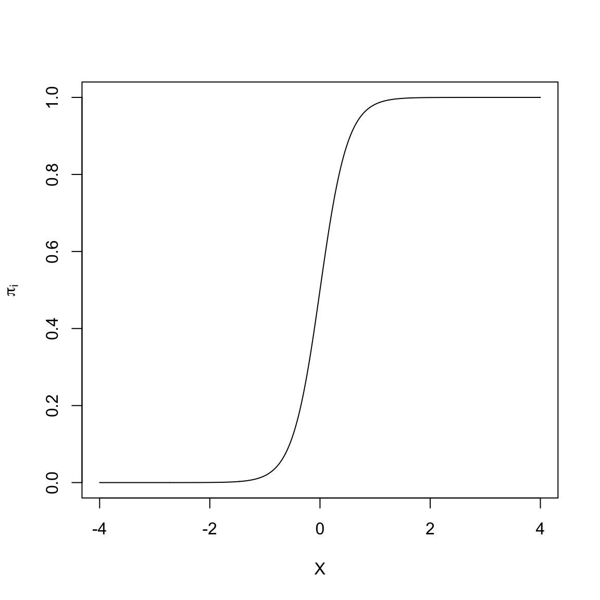
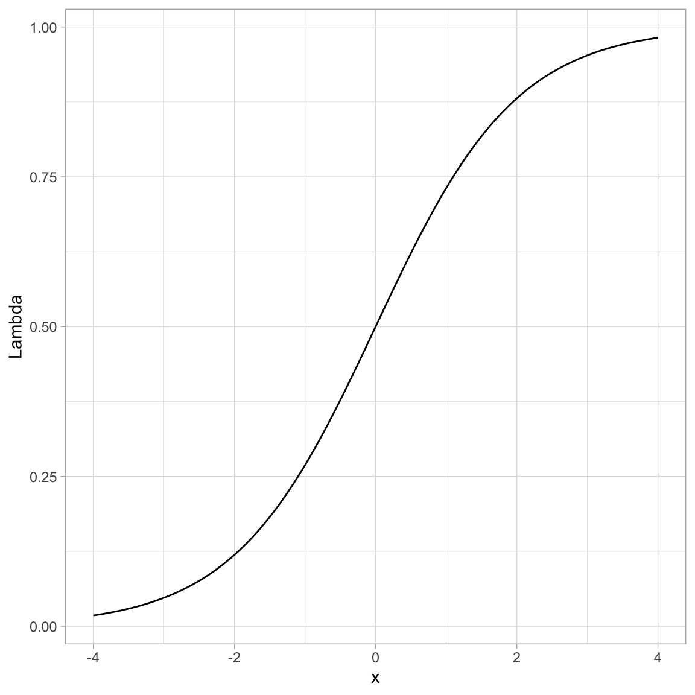
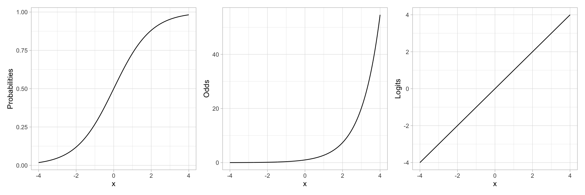
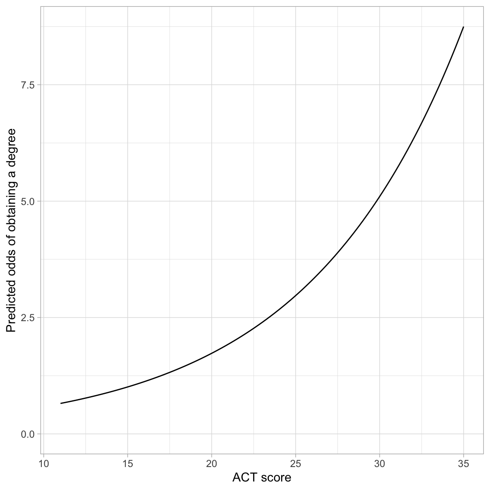
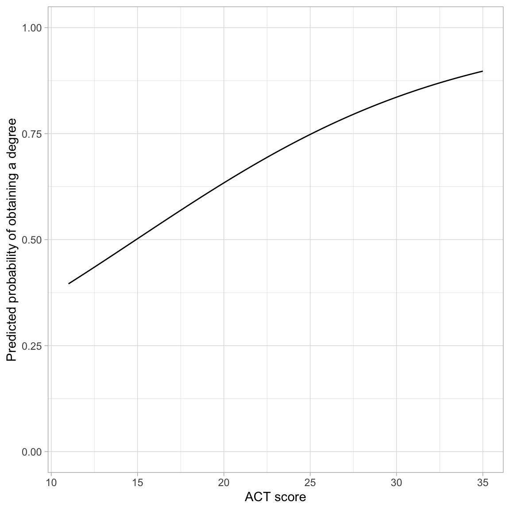
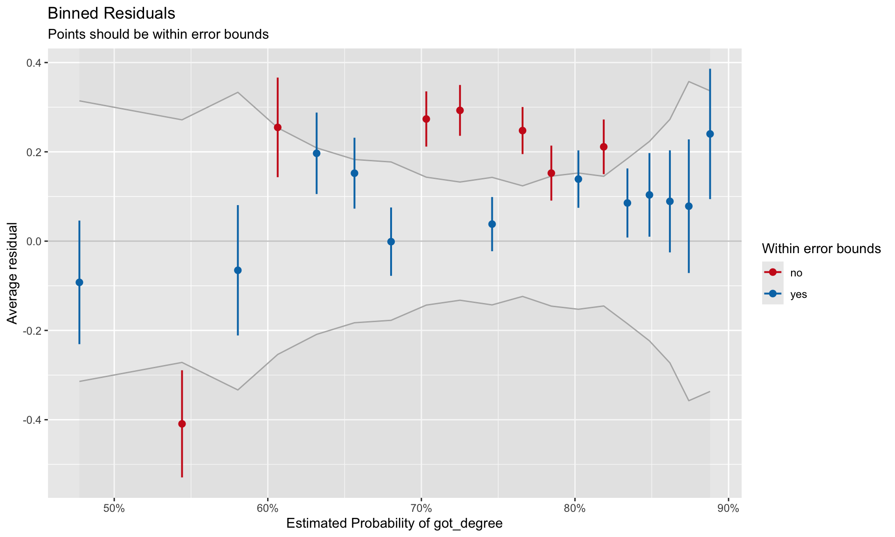

In this chapter, you will learn how to use logistic regression models to model dichotomous categorical outcome variables (e.g., dummy coded outcome). We will use data from the file graduation.csv to explore predictors of college graduation.
# Load librarieslibrary(AICcmodavg)library(broom)library(corrr)library(gt)library(patchwork)library(performance)library(tidyverse)# Read in data and create dummy variable for outcomegrad =read_csv(file ="https://raw.githubusercontent.com/zief0002/fluffy-ants/main/data/graduation.csv") |>mutate(got_degree =if_else(degree =="Yes", 1, 0) )# View datagrad
# A tibble: 2,344 × 8
student degree act scholarship ap_courses first_gen non_traditional
<dbl> <chr> <dbl> <dbl> <dbl> <chr> <chr>
1 1 Yes 21 0 0 No No
2 2 Yes 19 0 0 No No
3 3 Yes 27 0 0 Yes No
4 4 Yes 25 0.5 0 Yes No
5 5 No 28 0 17 Yes No
6 6 Yes 21 0 0 No Yes
7 7 Yes 27 0 8 Yes No
8 8 No 20 0 0 No No
9 9 Yes 26 0 0 Yes No
10 10 Yes 25 0 4 Yes No
# ℹ 2,334 more rows
# ℹ 1 more variable: got_degree <dbl>
We will also examine the empirical proportions of students who obtain a degree at different ACT scores to remind us about the relationship we will be modeling.
# Obtain the proportion who obtain a degree for each ACT scoreprop_grad = grad |>group_by(act, degree) |>summarize(N =n()) |>mutate(Prop = N /sum (N) ) |>ungroup() |>filter(degree =="Yes")# Scatterplotggplot(data = prop_grad, aes(x = act, y = Prop)) +geom_point(aes(size = N)) +geom_smooth(aes(weight = N), method ="loess", se =FALSE) +theme_bw() +xlab("ACT score") +ylab("Proportion who obtained a degree")

Figure 14.1: Proportion of students who obtain a degree conditional on ACT score. Size of the dot is proportional to sample size. The loess smoother is based on the raw data.
Because the sample sizes differs across ACT scores, we need to account for that by weighting the loess smoother. To do this we include aes(weight=) in the geom_smooth() layer.
In the last set of notes, we saw that using the linear probability model leads to direct violations of the linear model’s assumptions. If that isn’t problematic enough, it is possible to run into severe issues when we make predictions. For example, given the constant effect of X in these models it is possible to have an X value that results in a predicted proportion that is either greater than 1 or less than 0. This is a problem since proportions are constrained to the range of \(\left[0,~1\right]\).
14.2 Alternative Models to the Linear Probability Model
Many of the non-linear models that are typically used to model dichotomous outcome data are “S”-shaped models. Below is a plot of one-such “S”-shaped model.

Figure 14.2: An ‘S’-shaped model.
The non-linear “S”-shaped model has many attractive features. First, the predicted proportions (\(\pi_i\)) are bounded between 0 and 1. Furthermore, as X gets smaller, \(\pi_i\) approaches 0 at a slower rate. Similarly, as X gets larger, \(\pi_i\) approaches 1 at a slower rate. Lastly, this model curve is monotonic; smaller values of X are associated with smaller predicted proportions and larger values of X are associated with larger predicted proportions. (Or, if the “S” were backwards, smaller values of X are associated with larger predicted proportions and larger values of X would be associated with smaller predicted proportions). The key is that there are no bends in the curve; it is always growing or always decreasing.
In our student example, the empirical data maps well to this curve. Higher ACT scores are associated with a higher proportion of students who obtain a degree (monotonic). The effect of ACT, however, is not constant, and seems to diminish at higher ACT scores. Lastly, we want to bound the proportion who obtain a degree at every ACT score to lie between 0 and 1.
14.2.1 A Transformation to Fit the “S”-shaped Curve
We need to identify a mathematical function that relates X to Y in such a way that we produce this “S”-shaped curve. To do this we apply a transformation function, call it \(\Lambda\) (Lambda), that fits the criteria for such a function (monotonic, nonlinear, maps to \([0,~1]\) space). There are several mathematical functions that do this. One commonly used function that meets these specifications is the logistic function. Mathematically, the logistic function is:
\[
\Lambda(x) = \frac{1}{1 + e^{-x}}
\]
where x is the value fed into the logistic function. For example, to logistically transform \(x=3\), we use
Below we show how to transform many such values using R.
# Create w values and transformed valuesexample =tibble(x =seq(from =-4, to =4, by =0.01) # Set up values ) |>mutate(Lambda =1/ (1+exp(-x)) # Transform using logistic function )# View dataexample
# Plot the resultsggplot(data = example, aes(x = x, y = Lambda)) +geom_line() +theme_light()

Figure 14.3: Plot of the logistically transformed values for a sequence of values from -4 to 4.
You can see that by using this transformation we get a monotonic “S”-shaped curve. Now try substituting a really large value of x into the function. This gives an asymptote at 1. Also substitute a really “large”” negative value in for x. This gives an asymptote at 0. So this function also bounds the output between 0 and 1.
14.3 Using the Logistic Function in Regression
How does this work in a regression? There, we are relating the predicted values, that is, the \(\beta_0 + \beta_1(X_i)\) values, to the probability of Y. So we need to apply the “S”-shaped logistic transformation to convert those predicted values:
Since we took a linear model (\(\beta_0 + \beta_1(X_i)\)) and applied a logistic transformation, we refer to the resulting model as the linear logistic model or more simply, the logistic model.
14.3.1 Re-Expressing a Logistic Transformation
The logistic model expresses the proportion of 1s (\(\pi_i\)) as a function of the predictor \(X\). It can be mathematically expressed as:
The logistic model expresses the natural logarithm of \(\frac{\pi_i}{1 - \pi_i}\) as a linear function of X. Note that there is no error term on this model. This is because the model is for the mean structure only (the proportions), we are not modeling the actual \(Y_i\) values (i.e., the 0s and 1s) with the logistic regression model.
14.4 Odds: A Ratio of Probabilities
The ratio that we are taking the logarithm of, \(\frac{\pi_i}{1 - \pi_i}\), is referred to as odds. Odds are the ratio of two probabilities. Namely the chance an event occurs (\(\pi_i\)) versus the chance that same event does not occur (\(1 - \pi_i\)). As such, it gives the relative probability of that event occurring. To understand this better, we will look at a couple examples.
Let’s assume that the probability of getting an “A” in a course is 0.7. Then we know the probability of NOT getting an “A” in that course is 0.3. The odds of getting an “A” are then
\[
\mathrm{Odds} = \frac{0.7}{0.3} = 2.33
\]
The relative probability of getting an “A” is 2.33. That is, the probability of getting an “A” in the class is 2.33 times more likely than NOT getting an “A” in the class.
The probability that the Minnesota Wild win the Stanley Cup is 0.0204 times as likely them NOT winning the Stanley Cup. (Odds less than 1 indicate that is is more likely for an event NOT to occur than to occur. Invert the fraction to compute how much more like the event is not to occur.)
FYI
In the logistic model, we are predicting the log-odds (also referred to as the logit. When we get these values, we typically transform the logits to odds by inverting the log-transformation (take e to that power.)
14.5 Relationship between X and Different Transformations
Odds are a re-expression of the probabilities, and similarly log-odds (or logits) is a transformation of the odds onto the log scale. While the logistic regression is performed on the logits of Y, like any model where we have transformed variables to work in the model, we can back-transform when we present the results. In logistic regression we can present our results in logits, odds, or probabilities. Because of the transformations, each of these will have a different relationship with the predictor.
For example, let’s re-examine the plot of the “S”-shaped example data. This depicted the relationship between a predictor X and the probability of Y. We could also depict the relationship between X and the odds of Y, or the relationship between X and the log-odds of Y.
# Create odds and logit valuesexample = example |>mutate(Odds = Lambda / (1- Lambda), # Transform to oddsLogits =log(Odds) )# View dataexample
# S-shaped curve (probabilities)p1 =ggplot(data = example, aes(x = x, y = Lambda)) +geom_line() +theme_light() +ylab("Probabilities")# Exponential growth curve (odds)p2 =ggplot(data = example, aes(x = x, y = Odds)) +geom_line() +theme_light() +ylab("Odds")# Linear (log-odds)p3 =ggplot(data = example, aes(x = x, y = Logits)) +geom_line() +theme_light() +ylab("Logits")# Output plotsp1 | p2 | p3

Figure 14.4: Plot showing the relationship between the probability of Y versus X (LEFT), the odds of Y versus X (CENTER), and the log-odds of Y versus X (RIGHT).
Note that by transforming the probabilities into odds, we have changed the “S”-shaped curve into a classic exponential growth curve. (The Rule-of-the-Bulge suggests we can “fix” this by applying a downward power transformation on Y.) Then, by log-transforming the Y-values (the odds in this case), the resulting relationship is now linear. Thus an “S”-shaped curve can be “linearized” by transforming probabilities to logits (log-odds). Mathematically, this is equivalent to applying a logistic transformation to the predicted values.
14.6 Binomially Distributed Errors
The logistic transformation fixed two problems: (1) the non-linearity in the conditional mean function, and (2) bounding any predicted values between 0 and 1. However, just fitting this transformation does not fix the problem of non-normality. Remember from the previous notes we learned that at each \(X_i\) there were only two potential values for \(Y_i\); 0 or 1. Rather than use a normal (or Gaussian) distribution to model the conditional distribution of \(Y_i\), we will use the binomial distribution.
The binomial distribution is a discrete probability distribution that gives the probability of obtaining exactly k successes out of n Bernoulli trials (where the result of each Bernoulli trial is true with probability \(\pi\) and false with probability \(1-\pi\)). This is appropriate since at each ACT value of there are \(n_i\) students, k of which obtained their degree (\(Y=1\)).
14.7 Fitting the Binomial Logistic Model in R
To fit a logistic regression model with binomial errors, we use the glm() function.1 The syntax to fit the logistic model using glm() is:
The formula depicting the model and the data= arguments are specified in the same manner as in the lm() function. We also need to specify the distribution for the conditional \(Y_i\) values (binomial) and the link function (logit) via the family= argument.
For our example,
# Fit logistic modelglm.1=glm(got_degree ~1+ act, data = grad, family =binomial(link ="logit"))
The coefficients of the model can be printed using coef().
# Get coefficientscoef(glm.1)
(Intercept) act
-1.6108878 0.1075389
Based on this output, the fitted equation for the model is:
We interpret the coefficients in the same manner as we interpret coefficients from a linear model, with the caveat that the outcome is now in log-odds (or logits):
The predicted log-odds of obtaining a degree for students with an ACT score of 0 are \(-1.61\).
Each one-point difference in ACT score is associated with a difference of 0.11 in the predicted log-odds of obtaining a degree, on average.
14.7.1 Back-Transforming to Odds
For better interpretations, we can back-transform log-odds to odds. This is typically a better metric for interpretation of the coefficients. To back-transform to odds, we exponentiate both sides of the fitted equation and use the rules of exponents to simplify:
The odds of obtaining a degree for students with an ACT score of 0 are 0.2. That is, for these students, the probability of obtaining a degree is 0.2 times that of not obtaining a degree (Although it is extrapolating, it is far more likely these students will not obtain their degree!)
To interpret the effect of ACT on the odds of obtaining a degree, we will compare the odds of obtaining a degree for students that have ACT score that differ by one point. Say ACT = 0 and ACT = 1.
We already know the predicted odds for students with ACT = 0, namely \(e^{-1.61}\). For students with an ACT of 1, their predicted odds of obtaining a degree are:
These students odds of obtaining a degree are \(e^{0.11}\) times greater than students with an ACT score of 0. Moreover, this increase in the odds, on average, is the case for every one-point difference in ACT score. In general,
The predicted odds for \(X=0\) are \(e^{\hat\beta_0}\).
Each one-unit difference in \(X\) is associated with a \(e^{\hat\beta_1}\) times increase (decrease) in the odds.
We can obtain these values in R by using the coef() function to obtain the fitted model’s coefficients and then exponentiating them using the exp() function.
# Exponentiate the coefficientsexp(coef(glm.1))
(Intercept) act
0.1997102 1.1135342
INTERPRETATION
From these values, we interpret the coefficients in the odds metric as:
The predicted odds of obtaining a degree for students with an ACT score of 0 are 0.20.
Each one-point difference in ACT score is associated with 1.11 times greater odds of obtaining a degree.
To even further understand and interpret the fitted model, we can plot the predicted odds of obtaining a degree for a range of ACT scores. Recall, the general fitted equation for the logistic regression model is written as:
We include the right-side of this in the argument fun= of the geom_function() layer, substituting in the values for \(\hat\beta_0\) and \(\hat\beta_1\). Below we plot the results from our fitted logistic model.
# Plot the fitted equationggplot(data = grad, aes(x = act, y = got_degree)) +geom_point(alpha =0) +geom_function(fun =function(x) {exp(-1.611+0.108*x)} ) +theme_light() +xlab("ACT score") +ylab("Predicted odds of obtaining a degree")

Figure 14.5: Predicted odds of obtaining a degree as a function of ACT score.
The monotonic increase in the curve indicates the positive effect of ACT score on the odds of obtaining a degree. The exponential growth curve indicates that students with higher ACT scores have increasingly higher odds of obtaining a degree.
14.7.2 Back-Transforming to Probability
We can also back-transform from odds to probability. To do this, we will again start with the logistic fitted equation and use algebra to isolate the probability of obtaining a degree (\(\pi_i\)) on the left-hand side of the equation.
That is, to obtain the probability of obtaining a degree, we can transform the fitted values (i.e., the predicted log-odds) from the logistic model. For example, the intercept from the logistic fitted equation, \(-1.61\) was the predicted log-odds of obtaining a degree for students with an ACT of 0. To obtain the predicted probability of obtaining a degree for students with an ACT of 0:
# Predicted probability of obtaining a degree; ACT=0exp(-1.61) / (1+exp(-1.61))
[1] 0.1665886
For students with ACT of 0, the predicted probability of obtaining a degree is 0.17.
This transformation from log-odds to probability, is non-linear, which means that there is not a clean interpretation of the effects of ACT (i.e., the slope) on the probability of obtaining a degree To understand this effect we can plot the probability of obtaining a degree across the range of ACT scores. To do this, we use geom_function() and input the transformation to probability with the fitted equation:
# Plot the fitted equationggplot(data = grad, aes(x = act, y = got_degree)) +geom_point(alpha =0) +geom_function(fun =function(x) {exp(-1.611+0.108*x) / (1+exp(-1.611+0.108*x))} ) +theme_light() +xlab("ACT score") +ylab("Predicted probability of obtaining a degree") +ylim(0, 1)

Figure 14.6: Predicted probability of obtaining a degree as a function of ACT score.
The effect of ACT on the probability of obtaining a degree follows a monotonic increasing “S”-curve. While there is always an increasing effect of ACT on the probability of obtaining a degree, the magnitude of this effect depends on ACT score. For lower ACT scores there is a larger effect of ACT score on the probability of obtaining a degree than for higher ACT scores.
One interesting point on the plot is the ACT score where the probability of obtaining a degree is 0.5. In our example, this is at an ACT score of approximately 15. This implies that students who score less than 15 are more likely to not obtain a degree than to obtain a degree (on average), and those that score higher than 15 are more likely to obtain a degree than not (on average).
14.7.2.1 Rough Interpretation of the Slope
One rough interpretation that is often used is to divide the slope coefficient by 4 to get an upper bound of the predictive difference in probability of Y per unit increase in X. In our example, each one-point difference in ACT score is associated with, at most, a \(0.108/4=.027\) difference in the probability of obtaining a degree, on average.
The mathematics behind this rough interpretation is based on maximizing the rate-of-change, which is based on setting the first derivative of the logistic function to zero and solving. Recall that the logistic function relates the probabilities to the fitted equation as:
This is maximized when \(\hat\beta_0 + \hat\beta_1(x_i)=0\), which means we can substitute 0 into the derivative to determine the maximum rate-of-change:
The metric of measuring residual fit is the deviance (remember the deviance was \(-2 \times\) log-likelihood). The value in the null.deviance column is the residual deviance from fitting the intercept-only model. It acts as a baseline to compare other models.
# Fit intercept-only modelglm.0=glm(got_degree ~1, data = grad, family =binomial(link ="logit"))# Compute deviance-2*logLik(glm.0)[[1]]
[1] 2722.546
The value in the deviance column is the residual deviance from fitting whichever model was fitted, in our case the model that used ACT score as a predictor.
# Compute deviance for glm.1-2*logLik(glm.1)[[1]]
[1] 2633.236
Recall that deviance is akin to the sum of squared residuals (SSE) in conventional linear regression; smaller values indicate less error. In our case, the model that includes ACT score as a predictor has less error than the intercept only model; its deviance is 90 less than the intercept-only model.
The deviance values or log-likelihoods are often reported in a table of regression results. They are also used to compute differenct information criteria.
14.9 Evaluating the Effect of ACT Acore
To evaluate the effect of ACT we compute the AICc values and other metrics in out table of model evidence.
aictab(cand.set =list(glm.0, glm.1),modnames =c("Intercept-Only", "Effect of ACT"))
Model selection based on AICc:
K AICc Delta_AICc AICcWt Cum.Wt LL
Effect of ACT 2 2637.24 0.00 1 1 -1316.62
Intercept-Only 1 2724.55 87.31 0 1 -1361.27
Here, given the data and the candidate set of models, there is overwhelming empirical support to adopt the model that includes ACT score.
14.9.1 Assessing Statistical Significance of the Predictor 🤮
We can obtain p-values to evaluate statistical significance of predictors. Similar to the regression model, we can obtain p-values under the classical framework and under the likelihood framework for inference. Under the classical framework we use tidy(). The z-values and p-values from tidy() are sometimes referred to as Wald statistics and Wald p-values.
# Classical framework for inference# Wald valuestidy(glm.1)
We can also use the log-likelihood values to carry out a likelihood ratio test to test the improvement in deviance from the baseline model (using the likelihood framework). Since the intercept-only model is nested in the model that includes ACT as a predictor, we can use a Likelihood Ratio Test to examine this. To do so, we use the anova() function with the added argument test="LRT".
# Likelihood framework for inferenceanova(glm.0, glm.1, test ="LRT")
The null hypothesis of this test is that there is NO improvement in the deviance. The results of this test, \(\chi^2(1)=89.3\), \(p<.001\), indicate that the observed difference of 89.3 is more than we would expect if the null hypothesis was true. In practice, this implies that the more complex model has significantly less error than the intercept-only model and should be adopted.
14.10 Pseudo R-Squared Values
When we fitted linear regression models, we computed an \(R^2\) value for the model as a summary measure of the model. This value quantified the amount of variation in the outcome that was explainable by the predictors included in the model. To compute this, we computed:
where the baseline model was the intercept-only model. This measured the proportion of reduction in the residuals from the baseline to the fitted model.
With logistic models, there is no sum of squared error, so we cannot compute an \(R^2\) value. However, the residual deviance is a similar measure to the sum of squared error. We can substitute the deviance in for SSE in our computation,
Interpreting pseudo \(R^2\) values are somewhat problematic. A naive interpretation is that differences in ACT scores explains 3.28% of the variation in graduation status. However, this interpretation is a bit sketchy. Pseudo \(R^2\) values mimic \(R^2\) values in that they are generally on a similar scale, ranging from 0 to 1 (though remember pseudo \(R^2\) values can be negative). Moreover, higher pseudo \(R^2\) values, like \(R^2\) values, indicate better model fit. So while I wouldn’t offer the earlier interpretation of the value of 0.0328 in a paper, the value close to 0 does suggest that ACT scores are not perhaps incredibly predictive of the log-odds (or odds or probability) of obtaining a degree.
FYI In logistic regression, several other pseudo \(R^2\) values have also been proposed. See https://stats.idre.ucla.edu/other/mult-pkg/faq/general/faq-what-are-pseudo-r-squareds/ for more information.
14.11 Assumptions of the Logistic Model
The assumptions for the logistic model are quite different than those for the linear model. The three major assumptions are:
The outcome is binary (only two possible outcomes).
The observations (or residuals) are independent.
There is a linear relationship between the predictors and the logit of the outcome. (Or that the average residual from the fitted logistic model is 0 for all fitted values.)
Unlike with linear regression, we have no assumption that the residuals are normally distributed, nor that there is homoskedasticity. In our example, Assumption 1 is met since the only two values of the outcome were “obtained a degree” or “did not obtain a degree”. We need to use the same logic we used in linear regression to verify the independence assumption. Here it seems tenable, since knowing whether one student obtained a degree, does not give us information about whether another student obtains a degree.
To evaluate the third assumption, we will again plot the residuals versus the fitted values and again look to ensure the \(Y=0\) line is encompassed in the confidence envelope for the loess smoother. However, as we saw earlier, plots of the raw and standardized residuals from a logistic regression are not that useful. Instead we will create a binned residual plot. Binned residuals are obtained by ordering all the observations by the fitted values, separating them into g roughly equal bins, and calculating the average residual value in each bin. The binned residual plot is then created by plotting the average residuals in each bin versus the average fitted value in each bin.
To obtain the average fitted values and average residuals in each bin, we will use the binned_residuals() function from the {performance} package. The print() function will then be used to create the binned residual plot.
# Obtain average fitted values and average residualsout.1=binned_residuals(glm.1)# View binned residualsas.data.frame(out.1)
# Residual plot# This will also require you to install the {see} packageplot(out.1)

Figure 14.7: Binned residuals versus the binned fitted values for the model that includes the linear effect of ACT to predict the log-odds of obtaining a degree.
Good fit to the assumption of linearity is indicated by most of the residuals being encompassed within the error bounds of the \(Y=0\) line. We can see some misfit in the binned residual plot. The warning message produced from the binned_residuals() function also indicates that we may have some misfits given that only 89% of the residuals are within the error bounds.
It is unclear from this plot what the misfit is due to. It may be because the relationship between ACT and the log-odds of obtaining a degree is non-linear. It may be because there are other predictors (main effects or interactions) that we are missing. (We will explore this in the next set of notes.)
The logistic regression model is from a family of models referred to as Generalized Linear Regression models. The General Linear Model (i.e., fixed-effects regression model) is also a member of the Generalized Linear Model family.↩︎
Source Code
# Logistic Regression```{r}#| echo: falsesource("scripts/_common.R")```## PreparationIn this chapter, you will learn how to use logistic regression models to model dichotomous categorical outcome variables (e.g., dummy coded outcome). We will use data from the file *graduation.csv* to explore predictors of college graduation. - [CSV File](https://raw.githubusercontent.com/zief0002/fluffy-ants/main/data/graduation.csv)- [Data Codebook](http://zief0002.github.io/fluffy-ants/codebooks/graduation.html)```{r}# Load librarieslibrary(AICcmodavg)library(broom)library(corrr)library(gt)library(patchwork)library(performance)library(tidyverse)# Read in data and create dummy variable for outcomegrad =read_csv(file ="https://raw.githubusercontent.com/zief0002/fluffy-ants/main/data/graduation.csv") |>mutate(got_degree =if_else(degree =="Yes", 1, 0) )# View datagrad```We will also examine the empirical proportions of students who obtain a degree at different ACT scores to remind us about the relationship we will be modeling. ```{r}#| label: fig-scatterplot-proportion#| fig-cap: "Proportion of students who obtain a degree conditional on ACT score. Size of the dot is proportional to sample size. The loess smoother is based on the raw data."#| fig-alt: "Proportion of students who obtain a degree conditional on ACT score. Size of the dot is proportional to sample size. The loess smoother is based on the raw data."# Obtain the proportion who obtain a degree for each ACT scoreprop_grad = grad |>group_by(act, degree) |>summarize(N =n()) |>mutate(Prop = N /sum (N) ) |>ungroup() |>filter(degree =="Yes")# Scatterplotggplot(data = prop_grad, aes(x = act, y = Prop)) +geom_point(aes(size = N)) +geom_smooth(aes(weight = N), method ="loess", se =FALSE) +theme_bw() +xlab("ACT score") +ylab("Proportion who obtained a degree")```Because the sample sizes differs across ACT scores, we need to account for that by weighting the loess smoother. To do this we include `aes(weight=)` in the `geom_smooth()` layer. In the last set of notes, we saw that using the linear probability model leads to direct violations of the linear model's assumptions. If that isn't problematic enough, it is possible to run into severe issues when we make predictions. For example, given the constant effect of *X* in these models it is possible to have an *X* value that results in a predicted proportion that is either greater than 1 or less than 0. This is a problem since proportions are constrained to the range of $\left[0,~1\right]$.<br />## Alternative Models to the Linear Probability ModelMany of the non-linear models that are typically used to model dichotomous outcome data are "S"-shaped models. Below is a plot of one-such "S"-shaped model.```{r}#| label: fig-s-shape#| fig-cap: "An 'S'-shaped model."#| fig-alt: "An 'S'-shaped model."#| echo: falsex =seq(from =-4, to =4, by = .01)y =1/ (1+exp(-(0+4*x)))plot(x, y, type ="l", xlab ="X", ylab =expression(pi[i]))```The non-linear "S"-shaped model has many attractive features. First, the predicted proportions ($\pi_i$) are bounded between 0 and 1. Furthermore, as *X* gets smaller, $\pi_i$ approaches 0 at a slower rate. Similarly, as *X* gets larger, $\pi_i$ approaches 1 at a slower rate. Lastly, this model curve is monotonic; smaller values of *X* are associated with smaller predicted proportions and larger values of *X* are associated with larger predicted proportions. (Or, if the "S" were backwards, smaller values of *X* are associated with larger predicted proportions and larger values of *X* would be associated with smaller predicted proportions). The key is that there are no bends in the curve; it is always growing or always decreasing.In our student example, the empirical data maps well to this curve. Higher ACT scores are associated with a higher proportion of students who obtain a degree (monotonic). The effect of ACT, however, is not constant, and seems to diminish at higher ACT scores. Lastly, we want to bound the proportion who obtain a degree at every ACT score to lie between 0 and 1.<br />### A Transformation to Fit the "S"-shaped CurveWe need to identify a mathematical function that relates *X* to *Y* in such a way that we produce this "S"-shaped curve. To do this we apply a transformation function, call it $\Lambda$ (Lambda), that fits the criteria for such a function (monotonic, nonlinear, maps to $[0,~1]$ space). There are several mathematical functions that do this. One commonly used function that meets these specifications is the **logistic function**. Mathematically, the logistic function is:$$\Lambda(x) = \frac{1}{1 + e^{-x}}$$where *x* is the value fed into the logistic function. For example, to logistically transform $x=3$, we use$$\begin{split}\Lambda(3) &= \frac{1}{1 + e^{-3}} \\[1ex]&= 0.953\end{split}$$Below we show how to transform many such values using R.```{r}#| label: fig-logistic#| fig-cap: "Plot of the logistically transformed values for a sequence of values from -4 to 4."#| fig-alt: "Plot of the logistically transformed values for a sequence of values from -4 to 4."# Create w values and transformed valuesexample =tibble(x =seq(from =-4, to =4, by =0.01) # Set up values ) |>mutate(Lambda =1/ (1+exp(-x)) # Transform using logistic function )# View dataexample# Plot the resultsggplot(data = example, aes(x = x, y = Lambda)) +geom_line() +theme_light()```You can see that by using this transformation we get a monotonic "S"-shaped curve. Now try substituting a really large value of *x* into the function. This gives an asymptote at 1. Also substitute a really "large"" negative value in for *x*. This gives an asymptote at 0. So this function also bounds the output between 0 and 1.<br />## Using the Logistic Function in RegressionHow does this work in a regression? There, we are relating the *predicted values*, that is, the $\beta_0 + \beta_1(X_i)$ values, to the probability of *Y*. So we need to apply the "S"-shaped logistic transformation to convert those predicted values:$$\pi_i = \Lambda\bigg[\beta_0 + \beta_1(X_i)\bigg]$$Substituting the predicted equation into the logistic transformation, we get:$$\pi_i = \frac{1}{1 + e^{-\big[\beta_0 + \beta_1(X_i)\big]}}$$Since we took a linear model ($\beta_0 + \beta_1(X_i)$) and applied a logistic transformation, we refer to the resulting model as the **linear logistic model** or more simply, the **logistic model**.<br />### Re-Expressing a Logistic TransformationThe logistic model expresses the proportion of 1s ($\pi_i$) as a function of the predictor $X$. It can be mathematically expressed as:$$\pi_i = \frac{1}{1 + e^{-\big[\beta_0 + \beta_1(X_i)\big]}}$$We can re-express this using algebra and rules of logarithms.$$\begin{split}\pi_i &= \frac{1}{1 + e^{-\big[\beta_0 + \beta_1(X_i)\big]}} \\[2ex]\pi_i \times (1 + e^{-\big[\beta_0 + \beta_1(X_i)\big]} ) &= 1 \\[2ex]\pi_i + \pi_i(e^{-\big[\beta_0 + \beta_1(X_i)\big]}) &= 1 \\[2ex]\pi_i(e^{-\big[\beta_0 + \beta_1(X_i)\big]}) &= 1 - \pi_i \\[2ex]e^{-\big[\beta_0 + \beta_1(X_i)\big]} &= \frac{1 - \pi_i}{\pi_i} \\[2ex]e^{\big[\beta_0 + \beta_1(X_i)\big]} &= \frac{\pi_i}{1 - \pi_i} \\[2ex]\ln \bigg(e^{\big[\beta_0 + \beta_1(X_i)\big]}\bigg) &= \ln \bigg( \frac{\pi_i}{1 - \pi_i} \bigg) \\[2ex]\beta_0 + \beta_1(X_i) &= \ln \bigg( \frac{\pi_i}{1 - \pi_i}\bigg)\end{split}$$Or,$$\ln \bigg( \frac{\pi_i}{1 - \pi_i}\bigg) = \beta_0 + \beta_1(X_i)$$:::fyi**FYI**The logistic model expresses the natural logarithm of $\frac{\pi_i}{1 - \pi_i}$ as a linear function of *X*. Note that there is no error term on this model. This is because the model is for the mean structure only (the proportions), we are not modeling the actual $Y_i$ values (i.e., the 0s and 1s) with the logistic regression model.:::<br />## Odds: A Ratio of ProbabilitiesThe ratio that we are taking the logarithm of, $\frac{\pi_i}{1 - \pi_i}$, is referred to as *odds*. Odds are the ratio of two probabilities. Namely the chance an event occurs ($\pi_i$) versus the chance that same event does not occur ($1 - \pi_i$). As such, it gives the *relative probability* of that event occurring. To understand this better, we will look at a couple examples.Let's assume that the probability of getting an "A" in a course is 0.7. Then we know the probability of NOT getting an "A" in that course is 0.3. The odds of getting an "A" are then$$\mathrm{Odds} = \frac{0.7}{0.3} = 2.33$$The relative probability of getting an "A" is 2.33. That is, the probability of getting an "A" in the class is 2.33 times more likely than NOT getting an "A" in the class.As another example, Fivethirtyeight.com predicted on March 08, 2022 that the [probability the Minnesota Wild would win the Stanley Cup was 0.02](https://projects.fivethirtyeight.com/2022-nhl-predictions/). The odds of the Minnesota Wild winning the Stanley Cup is then:$$\mathrm{Odds} = \frac{0.02}{0.98} = 0.0204$$The probability that the Minnesota Wild win the Stanley Cup is 0.0204 times as likely them NOT winning the Stanley Cup. (Odds less than 1 indicate that is is more likely for an event NOT to occur than to occur. Invert the fraction to compute how much more like the event is not to occur.):::fyi**FYI**In the logistic model, we are predicting the log-odds (also referred to as the *logit*. When we get these values, we typically transform the logits to odds by inverting the log-transformation (take *e* to that power.):::<br />## Relationship between X and Different TransformationsOdds are a re-expression of the probabilities, and similarly log-odds (or logits) is a transformation of the odds onto the log scale. While the logistic regression is performed on the logits of Y, like any model where we have transformed variables to work in the model, we can back-transform when we present the results. In logistic regression we can present our results in logits, odds, or probabilities. Because of the transformations, each of these will have a different relationship with the predictor.For example, let's re-examine the plot of the "S"-shaped example data. This depicted the relationship between a predictor *X* and the probability of *Y*. We could also depict the relationship between *X* and the odds of *Y*, or the relationship between *X* and the log-odds of *Y*.```{r}# Create odds and logit valuesexample = example |>mutate(Odds = Lambda / (1- Lambda), # Transform to oddsLogits =log(Odds) )# View dataexample``````{r}#| label: fig-prob-odds-logits#| fig-cap: "Plot showing the relationship between the probability of *Y* versus *X* (LEFT), the odds of *Y* versus *X* (CENTER), and the log-odds of *Y* versus *X* (RIGHT)."#| fig-alt: "Plot showing the relationship between the probability of *Y* versus *X* (LEFT), the odds of *Y* versus *X* (CENTER), and the log-odds of *Y* versus *X* (RIGHT)."#| fig-width: 12#| fig-height: 4#| out-width: "90%"#| code-fold: true# S-shaped curve (probabilities)p1 =ggplot(data = example, aes(x = x, y = Lambda)) +geom_line() +theme_light() +ylab("Probabilities")# Exponential growth curve (odds)p2 =ggplot(data = example, aes(x = x, y = Odds)) +geom_line() +theme_light() +ylab("Odds")# Linear (log-odds)p3 =ggplot(data = example, aes(x = x, y = Logits)) +geom_line() +theme_light() +ylab("Logits")# Output plotsp1 | p2 | p3```Note that by transforming the probabilities into odds, we have changed the "S"-shaped curve into a classic exponential growth curve. (The Rule-of-the-Bulge suggests we can "fix" this by applying a downward power transformation on *Y*.) Then, by log-transforming the *Y*-values (the odds in this case), the resulting relationship is now linear. Thus an "S"-shaped curve can be "linearized" by transforming probabilities to logits (log-odds). Mathematically, this is equivalent to applying a logistic transformation to the predicted values.<br />## Binomially Distributed ErrorsThe logistic transformation fixed two problems: (1) the non-linearity in the conditional mean function, and (2) bounding any predicted values between 0 and 1. However, just fitting this transformation does not fix the problem of non-normality. Remember from the previous notes we learned that at each $X_i$ there were only two potential values for $Y_i$; 0 or 1. Rather than use a normal (or Gaussian) distribution to model the conditional distribution of $Y_i$, we will use the *binomial distribution*.The binomial distribution is a discrete probability distribution that gives the probability of obtaining exactly *k* successes out of *n* Bernoulli trials (where the result of each Bernoulli trial is true with probability $\pi$ and false with probability $1-\pi$). This is appropriate since at each ACT value of there are $n_i$ students, *k* of which obtained their degree ($Y=1$).<br />## Fitting the Binomial Logistic Model in RTo fit a logistic regression model with binomial errors, we use the `glm()` function.^[The logistic regression model is from a family of models referred to as *Generalized Linear Regression* models. The General Linear Model (i.e., fixed-effects regression model) is also a member of the Generalized Linear Model family.] The syntax to fit the logistic model using `glm()` is:$$\mathtt{glm(} \mathrm{y} \sim \mathrm{1~+~x,~}\mathtt{data=}~\mathrm{dataframe,~}\mathtt{family~=~binomial(link~=~"logit")}$$The formula depicting the model and the `data=` arguments are specified in the same manner as in the `lm()` function. We also need to specify the distribution for the conditional $Y_i$ values (binomial) and the link function (logit) via the `family=` argument.For our example,```{r}# Fit logistic modelglm.1=glm(got_degree ~1+ act, data = grad, family =binomial(link ="logit"))```The coefficients of the model can be printed using `coef()`.```{r}# Get coefficientscoef(glm.1)```Based on this output, the fitted equation for the model is:$$\ln \bigg( \frac{\hat\pi_i}{1 - \hat\pi_i}\bigg) = -1.61 + 0.11(\mathrm{ACT~Score}_i)$$:::interpret**INTERPRETATION**We interpret the coefficients in the same manner as we interpret coefficients from a linear model, with the caveat that the outcome is now in log-odds (or logits):- The predicted log-odds of obtaining a degree for students with an ACT score of 0 are $-1.61$.- Each one-point difference in ACT score is associated with a difference of 0.11 in the predicted log-odds of obtaining a degree, on average.:::<br />### Back-Transforming to OddsFor better interpretations, we can back-transform log-odds to odds. This is typically a better metric for interpretation of the coefficients. To back-transform to odds, we exponentiate both sides of the fitted equation and use the rules of exponents to simplify:$$\begin{split}\ln \bigg( \frac{\hat\pi_i}{1 - \hat\pi_i}\bigg) &= -1.61 + 0.11(\mathrm{ACT~Score}_i) \\[4ex]e^{\ln \bigg( \frac{\hat\pi_i}{1 - \hat\pi_i}\bigg)} &= e^{-1.61 + 0.11(\mathrm{ACT~Score}_i)} \\[2ex]\frac{\hat\pi_i}{1 - \hat\pi_i} &= e^{-1.61} \times e^{0.11(\mathrm{ACT~Score}_i)}\end{split}$$When ACT score = 0, the *predicted odds of obtaining a degree* are$$\begin{split}\frac{\hat\pi_i}{1 - \hat\pi_i} &= e^{-1.61} \times e^{0.11(0)} \\&= e^{-1.61} \times 1 \\&= e^{-1.61} \\&= 0.2\end{split}$$The odds of obtaining a degree for students with an ACT score of 0 are 0.2. That is, for these students, the probability of obtaining a degree is 0.2 times that of not obtaining a degree (Although it is extrapolating, it is far more likely these students will not obtain their degree!)To interpret the effect of ACT on the odds of obtaining a degree, we will compare the odds of obtaining a degree for students that have ACT score that differ by one point. Say ACT = 0 and ACT = 1.We already know the predicted odds for students with ACT = 0, namely $e^{-1.61}$. For students with an ACT of 1, their predicted odds of obtaining a degree are:$$\begin{split}\frac{\hat\pi_i}{1 - \hat\pi_i} &= e^{-1.61} \times e^{0.11(1)} \\&= e^{-1.61} \times e^{0.11} \\\end{split}$$These students odds of obtaining a degree are $e^{0.11}$ times greater than students with an ACT score of 0. Moreover, this increase in the odds, on average, is the case for every one-point difference in ACT score. In general,- The predicted odds for $X=0$ are $e^{\hat\beta_0}$.- Each one-unit difference in $X$ is associated with a $e^{\hat\beta_1}$ times increase (decrease) in the odds.We can obtain these values in R by using the `coef()` function to obtain the fitted model's coefficients and then exponentiating them using the `exp()` function.```{r}# Exponentiate the coefficientsexp(coef(glm.1))```:::interpret**INTERPRETATION**From these values, we interpret the coefficients in the odds metric as:- The predicted odds of obtaining a degree for students with an ACT score of 0 are 0.20.- Each one-point difference in ACT score is associated with 1.11 times greater odds of obtaining a degree.:::To even further understand and interpret the fitted model, we can plot the predicted odds of obtaining a degree for a range of ACT scores. Recall, the general fitted equation for the logistic regression model is written as:$$\ln\bigg[\frac{\hat\pi_i}{1 - \hat\pi_i}\bigg] = \hat\beta_0 + \hat\beta_1(x_i)$$We need to predict odds rather than log-odds on the left-hand side of the equation. To do this we exponentiate both sides of the equation:$$\begin{split}e^{\ln\bigg[\frac{\hat\pi_i}{1 - \hat\pi_i}\bigg]} &= e^{\hat\beta_0 + \hat\beta_1(x_i)} \\[1em]\frac{\hat\pi_i}{1 - \hat\pi_i} &= e^{\hat\beta_0 + \hat\beta_1(x_i)}\end{split}$$We include the right-side of this in the argument `fun=` of the `geom_function()` layer, substituting in the values for $\hat\beta_0$ and $\hat\beta_1$. Below we plot the results from our fitted logistic model.```{r}#| label: fig-predicted-odds#| fig-cap: "Predicted odds of obtaining a degree as a function of ACT score."#| fig-alt: "Predicted odds of obtaining a degree as a function of ACT score."# Plot the fitted equationggplot(data = grad, aes(x = act, y = got_degree)) +geom_point(alpha =0) +geom_function(fun =function(x) {exp(-1.611+0.108*x)} ) +theme_light() +xlab("ACT score") +ylab("Predicted odds of obtaining a degree")```The monotonic increase in the curve indicates the positive effect of ACT score on the odds of obtaining a degree. The exponential growth curve indicates that students with higher ACT scores have increasingly higher odds of obtaining a degree.<br />### Back-Transforming to ProbabilityWe can also back-transform from odds to probability. To do this, we will again start with the logistic fitted equation and use algebra to isolate the probability of obtaining a degree ($\pi_i$) on the left-hand side of the equation.$$\begin{split}\ln\bigg[\frac{\hat\pi_i}{1 - \hat\pi_i}\bigg] &= \hat\beta_0 + \hat\beta_1(x_i) \\[1em]\frac{\hat\pi_i}{1 - \hat\pi_i} &= e^{\hat\beta_0 + \hat\beta_1(x_i)} \\[1em]\hat\pi_i &= e^{\hat\beta_0 + \hat\beta_1(x_i)} (1 - \hat\pi_i) \\[1em]\hat\pi_i &= e^{\hat\beta_0 + \hat\beta_1(x_i)} - e^{\hat\beta_0 + \hat\beta_1(x_i)}(\hat\pi_i) \\[1em]\hat\pi_i + e^{\hat\beta_0 + \hat\beta_1(x_i)}(\hat\pi_i) &= e^{\hat\beta_0 + \hat\beta_1(x_i)} \\[1em]\hat\pi_i(1 + e^{\hat\beta_0 + \hat\beta_1(x_i)}) &= e^{\hat\beta_0 + \hat\beta_1(x_i)} \\[1em]\hat\pi_i &= \frac{e^{\hat\beta_0 + \hat\beta_1(x_i)}}{1 + e^{\hat\beta_0 + \hat\beta_1(x_i)}} \\[1em]\hat\pi_i &= \frac{e^{\hat Y_i}}{1 + e^{\hat Y_i}}\end{split}$$That is, to obtain the probability of obtaining a degree, we can transform the fitted values (i.e., the predicted log-odds) from the logistic model. For example, the intercept from the logistic fitted equation, $-1.61$ was the predicted log-odds of obtaining a degree for students with an ACT of 0. To obtain the predicted probability of obtaining a degree for students with an ACT of 0:```{r}# Predicted probability of obtaining a degree; ACT=0exp(-1.61) / (1+exp(-1.61))```For students with ACT of 0, the predicted probability of obtaining a degree is 0.17.This transformation from log-odds to probability, is non-linear, which means that there is not a clean interpretation of the effects of ACT (i.e., the slope) on the probability of obtaining a degree To understand this effect we can plot the probability of obtaining a degree across the range of ACT scores. To do this, we use `geom_function()` and input the transformation to probability with the fitted equation:$$\hat\pi_i = \frac{e^{\hat\beta_0 + \hat\beta_1(x_i)}}{1 + e^{\hat\beta_0 + \hat\beta_1(x_i)}}$$```{r}#| label: fig-predicted-probability#| fig-cap: "Predicted probability of obtaining a degree as a function of ACT score."#| fig-alt: "Predicted probability of obtaining a degree as a function of ACT score."# Plot the fitted equationggplot(data = grad, aes(x = act, y = got_degree)) +geom_point(alpha =0) +geom_function(fun =function(x) {exp(-1.611+0.108*x) / (1+exp(-1.611+0.108*x))} ) +theme_light() +xlab("ACT score") +ylab("Predicted probability of obtaining a degree") +ylim(0, 1)```The effect of ACT on the probability of obtaining a degree follows a monotonic increasing "S"-curve. While there is always an increasing effect of ACT on the probability of obtaining a degree, the magnitude of this effect depends on ACT score. For lower ACT scores there is a larger effect of ACT score on the probability of obtaining a degree than for higher ACT scores.One interesting point on the plot is the ACT score where the probability of obtaining a degree is 0.5. In our example, this is at an ACT score of approximately 15. This implies that students who score less than 15 are more likely to not obtain a degree than to obtain a degree (on average), and those that score higher than 15 are more likely to obtain a degree than not (on average).<br />#### Rough Interpretation of the SlopeOne rough interpretation that is often used is to divide the slope coefficient by 4 to get an upper bound of the predictive difference in probability of *Y* per unit increase in *X*. In our example, each one-point difference in ACT score is associated with, at most, a $0.108/4=.027$ difference in the probability of obtaining a degree, on average.:::mathnoteThe mathematics behind this rough interpretation is based on maximizing the rate-of-change, which is based on setting the first derivative of the logistic function to zero and solving. Recall that the logistic function relates the probabilities to the fitted equation as:$$\hat\pi_i = \frac{e^{\hat\beta_0 + \hat\beta_1(x_i)}}{1 + e^{\hat\beta_0 + \hat\beta_1(x_i)}}$$The first derivative, with respect to *x* is:$$\frac{\hat\beta_1e^{\hat\beta_0 + \hat\beta_1(x_i)}}{\bigg[e^{\hat\beta_0 + \hat\beta_1(x_i)} + 1\bigg]^2}$$This is maximized when $\hat\beta_0 + \hat\beta_1(x_i)=0$, which means we can substitute 0 into the derivative to determine the maximum rate-of-change:$$\begin{split}&= \frac{\hat\beta_1e^{0}}{\bigg[e^{0} + 1\bigg]^2} \\[1ex]&= \frac{\hat\beta_1}{\bigg[1 + 1\bigg]^2} \\[1ex]&= \frac{\hat\beta_1}{4} \\[1ex]\end{split}$$Thus the maximum rate-of-change is the based on the slope coefficient divided by four.:::<br />## Model-Level SummariesThe `glance()` output for the GLM model also included model-level information. For the model we fitted, the model-level output was:```{r}# Model-level outputglance(glm.1) |>print(width =Inf)```The metric of measuring residual fit is the deviance (remember the deviance was $-2 \times$ log-likelihood). The value in the `null.deviance` column is the residual deviance from fitting the intercept-only model. It acts as a baseline to compare other models.```{r}# Fit intercept-only modelglm.0=glm(got_degree ~1, data = grad, family =binomial(link ="logit"))# Compute deviance-2*logLik(glm.0)[[1]]```The value in the `deviance` column is the residual deviance from fitting whichever model was fitted, in our case the model that used ACT score as a predictor.```{r}# Compute deviance for glm.1-2*logLik(glm.1)[[1]]```Recall that deviance is akin to the sum of squared residuals (SSE) in conventional linear regression; smaller values indicate less error. In our case, the model that includes ACT score as a predictor has less error than the intercept only model; its deviance is 90 less than the intercept-only model.The deviance values or log-likelihoods are often reported in a table of regression results. They are also used to compute differenct information criteria.<br />## Evaluating the Effect of ACT AcoreTo evaluate the effect of ACT we compute the AICc values and other metrics in out table of model evidence.```{r}aictab(cand.set =list(glm.0, glm.1),modnames =c("Intercept-Only", "Effect of ACT"))```Here, given the data and the candidate set of models, there is overwhelming empirical support to adopt the model that includes ACT score.<br />:::fyi### Assessing Statistical Significance of the Predictor 🤮We can obtain *p*-values to evaluate statistical significance of predictors. Similar to the regression model, we can obtain *p*-values under the classical framework and under the likelihood framework for inference. Under the classical framework we use `tidy()`. The *z*-values and *p*-values from `tidy()` are sometimes referred to as *Wald statistics* and *Wald p-values*.```{r}# Classical framework for inference# Wald valuestidy(glm.1)```We can also use the log-likelihood values to carry out a likelihood ratio test to test the improvement in deviance from the baseline model (using the likelihood framework). Since the intercept-only model is nested in the model that includes ACT as a predictor, we can use a Likelihood Ratio Test to examine this. To do so, we use the `anova()` function with the added argument `test="LRT"`.```{r}# Likelihood framework for inferenceanova(glm.0, glm.1, test ="LRT")```The null hypothesis of this test is that there is NO improvement in the deviance. The results of this test, $\chi^2(1)=89.3$, $p<.001$, indicate that the observed difference of 89.3 is more than we would expect if the null hypothesis was true. In practice, this implies that the more complex model has significantly less error than the intercept-only model and should be adopted.:::<br />## Pseudo R-Squared ValuesWhen we fitted linear regression models, we computed an $R^2$ value for the model as a summary measure of the model. This value quantified the amount of variation in the outcome that was explainable by the predictors included in the model. To compute this, we computed:$$R^2 = \frac{\mathrm{SSE}_{\mathrm{Baseline}} - \mathrm{SSE}_{\mathrm{Model}}}{\mathrm{SSE}_{\mathrm{Baseline}}}$$where the baseline model was the intercept-only model. This measured the proportion of reduction in the residuals from the baseline to the fitted model.With logistic models, there is no sum of squared error, so we cannot compute an $R^2$ value. However, the residual deviance is a similar measure to the sum of squared error. We can substitute the deviance in for SSE in our computation,$$\mathrm{Pseudo}\mbox{-}R^2 = \frac{\mathrm{Deviance}_{\mathrm{Baseline}} - \mathrm{Deviance}_{\mathrm{Model}}}{\mathrm{Deviance}_{\mathrm{Baseline}}}$$This measure is referred to as a pseudo-$R^2$ value. To compute this measure for our example:```{r}# Baseline residual deviance: 2722.6# Model residual deviance: 2633.2# Compute pseudo R-squared(2722.6-2633.2) /2722.6```Interpreting pseudo $R^2$ values are somewhat problematic. A naive interpretation is that differences in ACT scores explains 3.28% of the variation in graduation status. However, this interpretation is a bit sketchy. Pseudo $R^2$ values mimic $R^2$ values in that they are generally on a similar scale, ranging from 0 to 1 (though remember pseudo $R^2$ values can be negative). Moreover, higher pseudo $R^2$ values, like $R^2$ values, indicate better model fit. So while I wouldn't offer the earlier interpretation of the value of 0.0328 in a paper, the value close to 0 does suggest that ACT scores are not perhaps incredibly predictive of the log-odds (or odds or probability) of obtaining a degree.:::fyi**FYI**In logistic regression, several other pseudo $R^2$ values have also been proposed. See https://stats.idre.ucla.edu/other/mult-pkg/faq/general/faq-what-are-pseudo-r-squareds/ for more information.:::<br />## Assumptions of the Logistic ModelThe assumptions for the logistic model are quite different than those for the linear model. The three major assumptions are:1. The outcome is binary (only two possible outcomes).2. The observations (or residuals) are independent.3. There is a linear relationship between the predictors and the logit of the outcome. (Or that the average residual from the fitted logistic model is 0 for all fitted values.)Unlike with linear regression, we have no assumption that the residuals are normally distributed, nor that there is homoskedasticity. In our example, Assumption 1 is met since the only two values of the outcome were "obtained a degree" or "did not obtain a degree". We need to use the same logic we used in linear regression to verify the independence assumption. Here it seems tenable, since knowing whether one student obtained a degree, does not give us information about whether another student obtains a degree.To evaluate the third assumption, we will again plot the residuals versus the fitted values and again look to ensure the $Y=0$ line is encompassed in the confidence envelope for the loess smoother. However, as we saw earlier, plots of the raw and standardized residuals from a logistic regression are not that useful. Instead we will create a **binned residual plot**. Binned residuals are obtained by ordering all the observations by the fitted values, separating them into *g* roughly equal bins, and calculating the average residual value in each bin. The binned residual plot is then created by plotting the average residuals in each bin versus the average fitted value in each bin.To obtain the average fitted values and average residuals in each bin, we will use the `binned_residuals()` function from the `{performance}` package. The `print()` function will then be used to create the binned residual plot.```{r}# Obtain average fitted values and average residualsout.1=binned_residuals(glm.1)# View binned residualsas.data.frame(out.1)``````{r}#| label: fig-resid#| fig-cap: "Binned residuals versus the binned fitted values for the model that includes the linear effect of ACT to predict the log-odds of obtaining a degree."#| fig-alt: "Binned residuals versus the binned fitted values for the model that includes the linear effect of ACT to predict the log-odds of obtaining a degree."#| fig-width: 10#| fig-height: 6#| out-width: "80%"# Residual plot# This will also require you to install the {see} packageplot(out.1)```Good fit to the assumption of linearity is indicated by most of the residuals being encompassed within the error bounds of the $Y=0$ line. We can see some misfit in the binned residual plot. The warning message produced from the `binned_residuals()` function also indicates that we may have some misfits given that only 89% of the residuals are within the error bounds.It is unclear from this plot what the misfit is due to. It may be because the relationship between ACT and the log-odds of obtaining a degree is non-linear. It may be because there are other predictors (main effects or interactions) that we are missing. (We will explore this in the next set of notes.)<br />